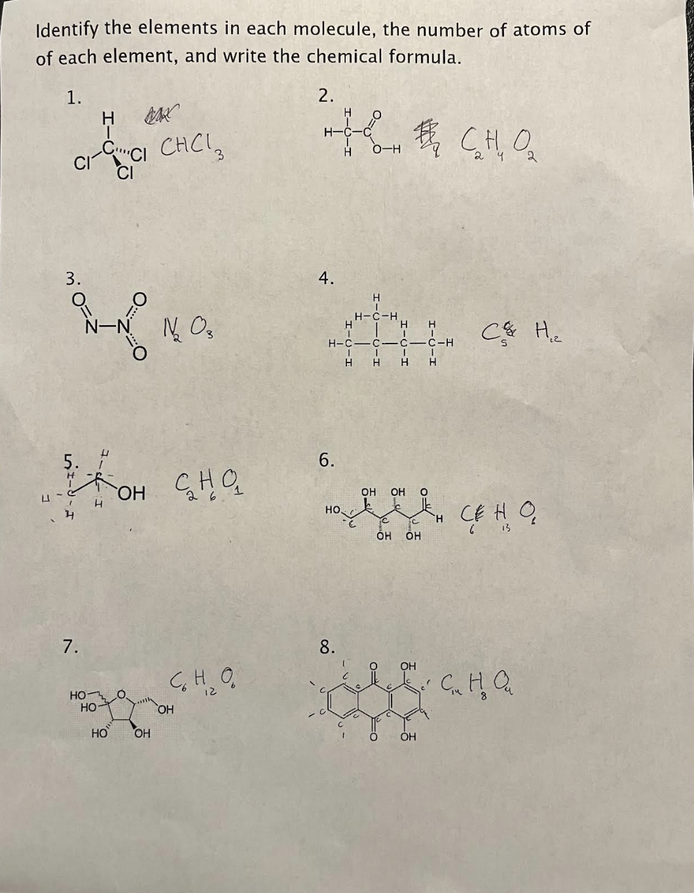
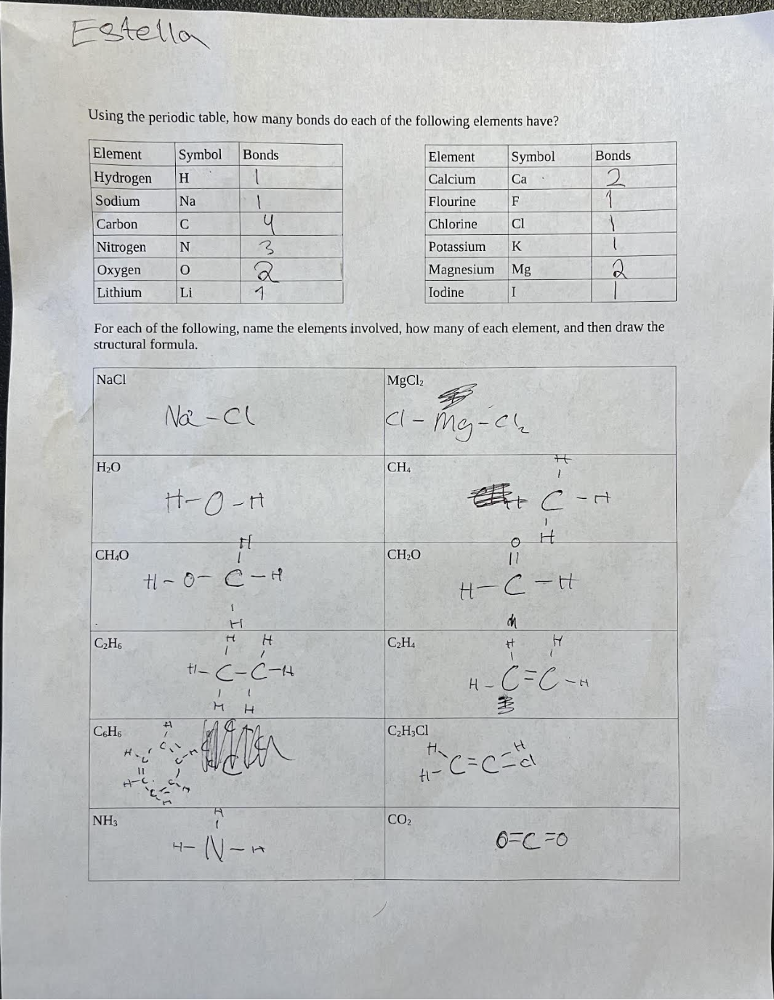
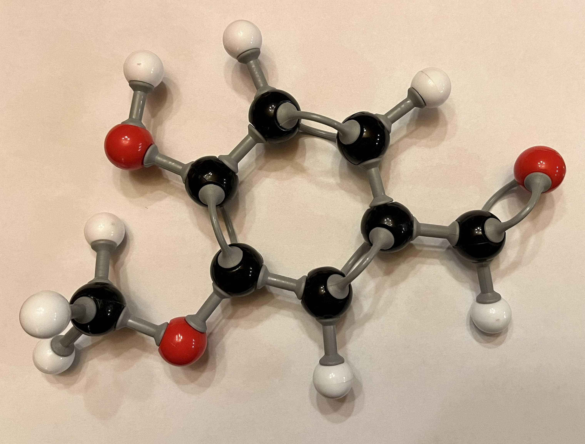

Contributions from Members of Granny's Science Club
Click on the picture to enlarge it.
|
  |
Worked examples showing how to determine the structure of a molecule from its chemical formula and how to determine the chemical formula from
a molecule's structure. This activity introduced the proper way to write and interpret chemical formulas and reinforced the idea that different
elements can form different numbers of bonds. The line notation is not intuitive, but was introduced because it is very frequently seen in
organic chemistry, biochemistry and biology, and once you learn how to decode it, it is not difficult.
|
|
 |
We practiced making a 3 dimensional model of the vanillin molecule based off a 2-dimensional structural diagram. This activity emphasized that
molecules are 3 dimensional even though we often draw them in 2 dimensions. It reinforced the idea of double bonds and introduced the idea of
functional groups that are added on to the central ring. It demonstrated how parts of the molecule, particularly those parts with double bonds
are less mobile, while parts of the molecule with single bonds are able to bend and rotate freely.
|
 |
A worked example showing the proper locations of electrons in their electron shells, given the atomic number (number of protons)
in the nucleus. This exercise demonstrates the relationship between the element, its atomic number, the number of electrons, and its
valence (the number of electrons it needs to complete its shell.)
|
{kind=link}
{kind=link}
{kind=link}